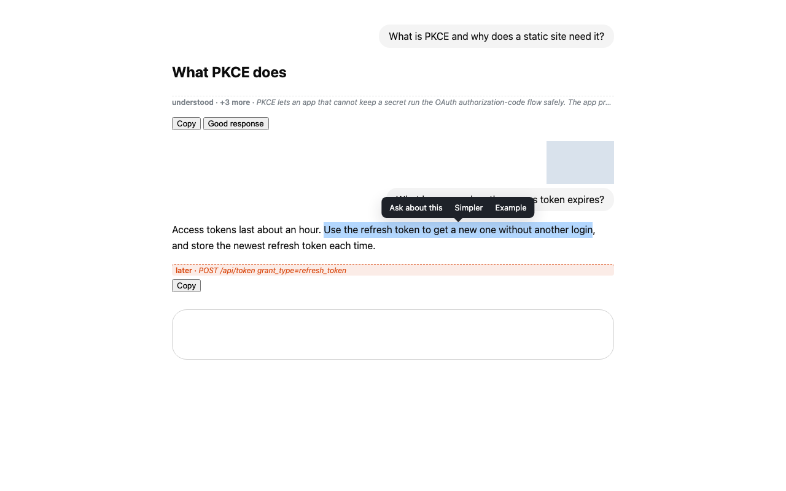
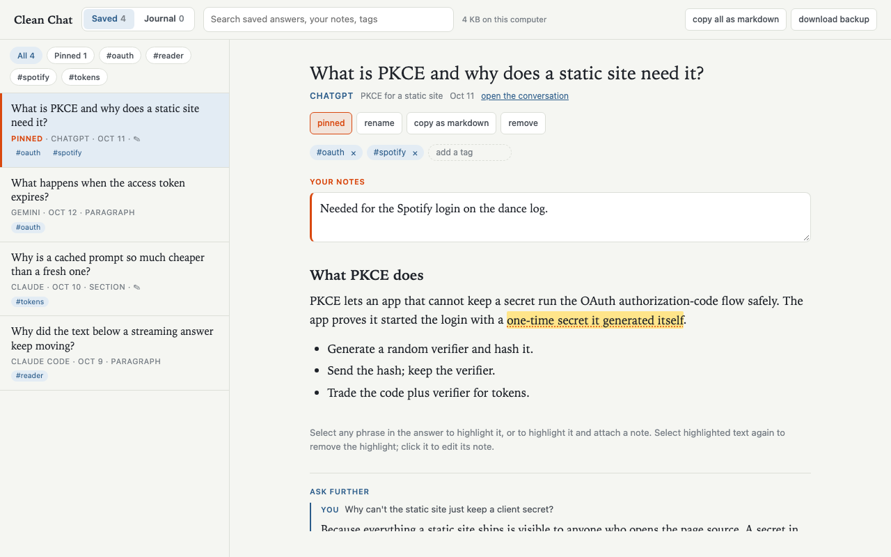
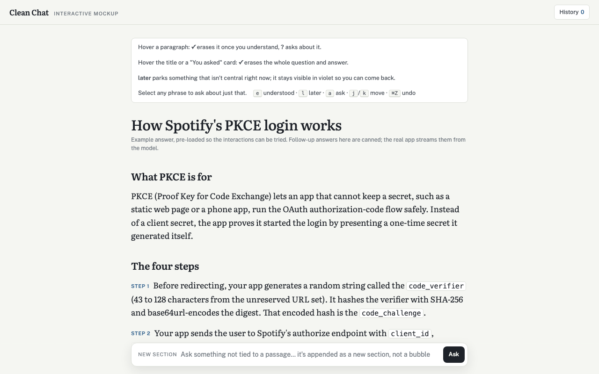

Read an AI chat like a textbook.
Erase what you understand. Park what can wait. Highlight and ask about what you don't. Save what matters. On the chat sites you already use, and on your Claude Code sessions.
Free and open source (AGPL-3.0). No server, no account, no analytics: everything stays in your browser or on your computer. A Chrome Web Store listing is in review.
Four gestures


Made for Claude Code too
The companion reader renders a Claude Code session as the same kind of page. Erase, park and highlight as on a site, then ask a follow-up right under the passage. The answer comes from a fork of the session, so the original is never touched, and the forked run is read-only: no shell, no edits, no web. The bottom box knows what you highlighted, asked and parked, and one click gives you five questions to ask next, the big picture behind your questions, or a concept map drawn as a tree.
Answers run through your own claude command and your own login or API key. Save from the reader into the extension's list, and ask further on any saved note, from any site.

Setup: Python 3 and the claude command. Double-click Start Reader.command, or install the slash commands and type /reader in any session. Details in the reader's README.
Which sites
Nineteen of the most used AI chat sites, in English and Chinese, through shared markup rules and a structural fallback that needs no site-specific hooks. Four are checked live by the author. If a site misbehaves, press h on the page, click copy page info, and paste it into an issue. It contains markup names only, no words from your conversation.
Privacy
There is no Clean Chat server. The extension reads the chat page it is on and writes to its own storage. Its only network calls are to your own computer (the optional reader) and to an endpoint you type in yourself. The reader serves pages to 127.0.0.1 only and never stores your login. Full statement and threat model: Privacy and SECURITY.md.